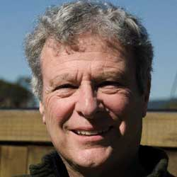
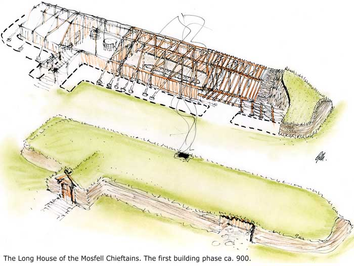
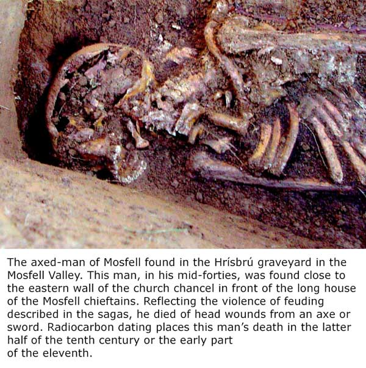
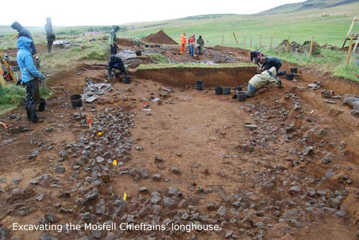
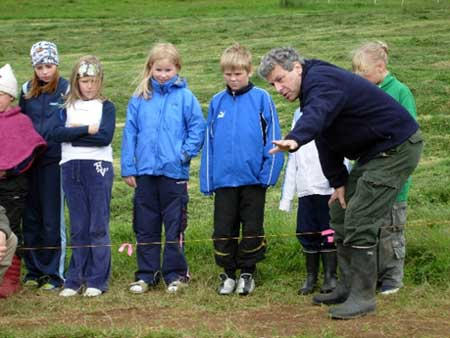
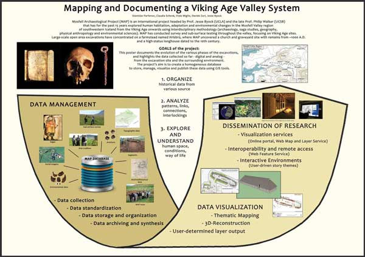
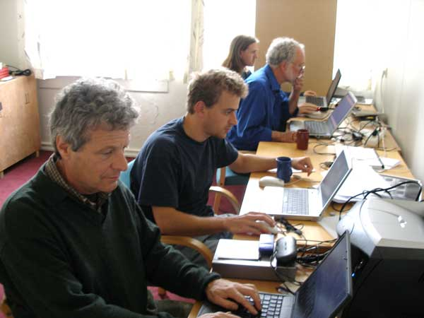
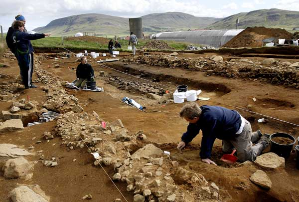

Websites

Current Positions at UCLA
- Distinguished Research Professor of Old Norse and Medieval Scandinavian Studies, in the Scandinavian Section, Research Professor
- Distinguished Research Professor, Cotsen Institute of Archaeology and Inter-departmental Program in Archaeology
- Director and Head Archaeologist, Mosfell Archaeological Project in Iceland
Teaching
- UCLA, 2009-2015, Scandinavian Section: Old Norse Language and Sagas, Viking History, Medieval Society, Feud and violence, Viking Age Archaeology, Archaeology of the North Atlantic
- UCLA, 1977-2009, Dept. of Germanic Languages: Old Norse Studies: Old Norse Language and Sagas, Viking History, Medieval Society, Feud and violence, Viking Age Archaeology, Archaeology of the North Atlantic.
- Viking Archaeology at the Cotsen Institute of Archaeology (1990-2014)
- Harvard University, 1973-1977, Dept. of Germanic Languages and Humanities: Head Teaching Fellow in Project in Oral and Early Literatures: Sagas and Viking History
Guest Professorships
- Scuola Normale Superiore, Pisa, History and Archaeology
- Uppsala University, Department of Archaeology
- University of Iceland, Department of History and Program in Viking Studies
- L’Ecole des Hautes Etudes, Paris in Anthropology and Archaeology
Governmental Consulting
- Icelandic Archaeological Representative to the Advisory Board of the international Serial Nominations Committee for UNESCO World Heritage Sites of the Viking Age.
Current Archaeological Field Project
Jesse Byock is Director and Head Archaeologist of the Mosfell Archaeological Project (MAP) excavating in Iceland’s Mosfell Valley (Mosfellsdalur). MAP works in collaboration with the National Museum of Iceland, the Icelandic National Cultural Heritage Agency, and the town of Mosfellsbær. The work is providing an in-depth multi-disciplinary study of the Viking Age and Iceland’s early centuries. MAP has a broad vision, combining archaeology, history, and anthropology with the study of medieval sagas and modern forensic, medical, and environmental research. The work is international, involving a considerable number of universities, scholars, and research laboratories on both sides of the Atlantic. The project began with the publication in Scientific American of the article, “Egil's Bones: A Viking Warrior and Paget's Disease,” analyzing information found in an Icelandic saga through modern medical research.

The Mosfell Valley is an exceptionally rich archaeological environment has been largely overlooked archaeologically and historically. The human landscape that we are unearthing begins with Iceland’s 9th-centuryViking Age, with research focusing on varied environments. The valley encapsulates the major ecologies of Iceland: coastal, riverine, and highland and the different landscape segments are subject to a variety of climate changes. MAP’s research is done in defined sections uncovering extensive (and new) documentation of human adaptation and environmental change in the North Atlantic during the Viking Age.
The work of the Mosfell Archaeological Project has broad application because the Mosfell Valley, with the long house of the Mosfell chieftains, is a textbook case of a North Atlantic/Icelandic valley system. A glaciated river valley with fertile bottom land, it reaches inland from the Viking Age harbor at Leirvogur (discovered by this research) in the coastal lowlands, up to the surrounding heaths and highlands.<

In the tenth and eleventh centuries an important chieftain family dominated the Mosfell Valley and controlled the Viking Age seaport at Leiruvogur (Clay Bay). Shortly after its settlement, the Valley developed into an Icelandic community of the Viking period connected to greater Iceland by road networks. These we are discovering. Through its seaport at the valley mouth, the Viking Age inhabitants were in contact with distant medieval worlds, perhaps as far away as Central Asia, Constantinople, and Greenland. Here too, MAP has made discoveries.
As the MAP multi-national team unearths the chieftain’s hall, pagan and Christian burial yards, cremation site, monumental stone-ship burial sites, early farmsteads, the early Christian church, and the Viking Age port at Leiruvogur at the coastal mouth of the Mosfell Valley, MAP is amassing a wealth of new information about society, life, health, and power in early Iceland. The archaeology is supplying the hard data for an invigorated understanding of the medieval sagas, several of which describe the specific MAP excavation sites in the Mosfell Valley.
There is urgency to our task. The Mosfell Valley lies within the greater Reykjavik area. Rapid urban expansion of Iceland’s capitol and largest city has, since we began our archaeology, in the most recent years spread across the coastal lowlands at the mouth of the valley. New housing and industrial parks are planned and endanger the ancient sites. MAP´s work is now to unearth the prehistory and early Viking Age past of the valley before it is lost. The goal is to document and preserve this extraordinary cultural heritage.
Education
Graduate
- Harvard University, Dept. of Germanic Languages, Scandinavian Program Ph.D., 1978 in Medieval Scandinavia and Old Norse Language, History, and Sagas.
- Ph.D. Committee Chairs: Albert Lord and Einar Haugen
- University of Lund, Sweden, 1972-1973, Viking History, Sagas, and Archaeology
- UCLA, Center for Medieval and Renaissance Studies, 1971-1972, Medieval History and Literature
- University of Iceland, 1970-1971. Icelandic, Sagas, History, and Society
- Georgetown University, School of Law, 1967-1968
Undergraduate
University of Vermont, B.A. in History with honors, 1967, year abroad at the Sorbonne, Paris, 1965-1966. Medieval History and Literature
Languages, speaking or reading
- French and Old French
- Icelandic and Old Icelandic/Old Norse
- Swedish
- Danish
- Norwegian
- German
- Latin
- Anglo-Saxon
Honors
Accorded Icelandic citizenship by Act of the Icelandic Parliament, 2005
Sampling of Research Fellowships and Prizes

Norwegian Government Kulturdepartementet grant for excavation research; Ahmanson Field Research Grants for Viking Archaeology; Arcadia Research Grants for Mosfell Archaeology and Old Norse Research; Icelandic Ministry of Education, Science, and Culture (Mennta-málaráðuneytið) grants; Alcoa Foundation for Icelandic Heritage Project; Fulbright Senior Specialist Research Grant for Collaborative historical and archaeological research Dept. of History, University of Iceland; John Simon Guggenheim Memorial Fellowship for Saga texts and Archaeology of a Viking Age Chieftain’s Establishment; Deustsche Forschungs Gemeinshaft, Center of Excellence Project (Häfen von der Römischen Kaiserzeit bis zum Mittelalter. Zur Archäologie und Geschichte regionaler und überregionaler Verkehrssysteme) in cooperation with Zentrum für Baltische und Skandinavische Archäologie, Stiftung Schleswig-Holsteinische Landesmuseen; UCLA Academic Senate Grants for Viking Archaeology; UCLA Council on Research, Research Enhancement Initiative Fellowship; National Science Foundation, Co-Principal Investigator; Fulbright Distinguished Senior Fellowship Award for Research in Old Norse Archaeology; University of California President’s Research Fellowship for Archival Research; National Endowment for the Humanities Senior Research Fellowship for Research Concerning the Mosfell Excavation; UCLA International Studies and Overseas Programs Faculty Research Grant; UC Berkeley Center for European Studies Research Fellowship, Nationalism and the Sagas; National Endowment for the Humanities Senior Research Fellowship for the book Feud in the Icelandic Sagas; Fulbright Senior Research Grant for Feud and Arbitration in Early Iceland.
Professional Associations
- Society for American Archaeology
- American Anthropological Association
- Félag fornleifafræðinga (Society of Icelandic Archaeologists)
- Sögufélag Íslands (Icelandic Historical Society)
- Häfen von der Römischen Kaiserzeit bis zum Mittelalter. Zur Archäologie und Geschichte regionaler und überregionaler Verkehrssysteme
- Medieval Academy of America
- Medieval Association of the Pacific
- International Saga Society
- Society for the Advancement of Scandinavian Studies
- Viking Society for Northern Research
- Founding Member of the Haugen Scholarship Fund
- Haskins Society for Viking, Anglo-Saxon, and Norman History
- Society of Historians of Scandinavia
Selected Publications

Books / Monographs
- Jesse L. Byock. Altnordisch 1: Die Sprache der Wikinger, Runen und Isländischen Sagas. (2016) Jules William Press.
- Jesse L. Byock. Viking Language 2: The Old Norse Reader. (2015) Jules William Press.
- Davide Zori and Jesse Byock (editors). Viking Archaeology in Iceland: The Mosfell Archaeological Project (2014). Turnhout: Brepols Publishers (Cursor Mundi).
- Jesse L. Byock. Viking Language 1: Learn Old Norse, Runes, and Icelandic Sagas (2013). Jules William Press.
- Grettir's Saga. Oxford and New York: Oxford University Press, 2009.
- Viking Age Iceland. London and New York: Penguin Books, 2001. Multiple printings.
- French edition (L’Islande des Vikings), Paris: Flammarion Editions Aubier, 2007.
- Medieval Iceland: Society, Sagas, and Power. (1988). Berkeley and Los Angeles: University of California Press.
- Russian edition, INOSTRANKA/CoLIBRI Publishers, forthcoming 2009.
- Italian edition, Mondadori, forthcoming 2010.
- Saga and Myths of the Northmen. London and New York: Penguin Books, 2006.
- The Prose Edda. London and New York: Penguin Books, 2005.
- The Saga of King Hrof Kraki. (1998). London and New York: Penguin Books, Multiple printings.
- The Saga of the Volsungs: The Norse Epic of Sigurd the Dragon-Slayer. (1990). Berkeley and Los Angeles: University of California press. Multiple printings.
- Penguin edition. (1999). Londion and New York: Penguin Books. Multiple printings.
- British edition. (1993). London: Hisarlik Press.
- Medieval Iceland: Society, Sagas, and Power. (1988). Berkeley and Los Angeles: University of California Press. Multiple hardcover and paperback printings.
- Danish edition. (1999). Island i sagatiden: Samfund, magt od fejde. (Iceland in the Saga Period: Society, Power, and feud) C.A. reitzel: Copenhagen. Multiple printings.
- British edition. (1993). London: Hisarlik Press.
- Japanese edition (A Social History of the Sagas and the Free State in Medieval Iceland, 1992). Tokyo: Tokai University Press.
- A History Book Club Selection. 1989-1990. Multiple printings.
- Feud in the Icelandic Saga. (1982). Berkeley and Los Angeles: University of California Press.
- Japanese edition. (1998). Tokyo: Tokai University Press.
Archaeological Reports (A Sampling)
- 2001 - Byock, Jesse, Phillip Walker, Jon Erlandson, and Per Holck
Viking Age Graves in the Mosfell Valley: The Mosfell Archaeological Project, 2001. Submitted to Fornleifavernd Ríkisins, Reykjavík.
- 2002 - Byock, Jesse, Phillip Walker, Jon Erlandson, Per Holck, and Mark Tveskov. Pagan and Christian Burial Sites at Hrísbrú: The Mosfell Archaeological Project, 2002. Submitted to Fornleifavernd Ríkisins, Reykjavík.
- 2003 - Byock, Jesse, Phillip Walker, Jon Erlandson, Per Holck, and Mark Tveskov
The Church Knoll (Kirkjuhóll) and Elfin Hill (Hulduhóll) Excavations at Hrísbrú in the Mosfell Valley: The Mosfell Archaeological Project, 2003. Submitted to Fornleifavernd Ríkisins, Iceland, Reykjavík.
- 2004 -Byock, Jesse, Phillip Walker, Jon Erlandson, Per Holck, and Davide Zori
The Kirkjuhóll and Hulduhóll Excavations, Phase 2, at Hrísbrú in the Mosfell Valley, Iceland: The Mosfell Archaeological Project, 2004. Submitted to Fornleifavernd Ríkisins, Reykjavík.
- 2005 - Byock, Jesse, Phillip Walker, Jon Erlandson, and Davide Zori
Excavations and Survey at Hrísbrú, Tjaldanes, and Borg in Mosfellsveit, Iceland: Mosfell Archaeological Project, 2005. Submitted to Fornleifavernd Ríkisins, Reykjavík.
- 2006 -Byock, Jesse, Phillip Walker, Jon Erlandson, and Davide Zori
Discovering the Longhouse at Hrísbrú in the Mosfell Valley: The Mosfell Archaeological Project, 2006. Submitted to Fornleifavernd Ríkisins, Reykjavík.
- 2007 -Byock, Jesse, Phillip Walker, and Davide Zori
The Hrísbrú Longhouse and Kirkjuhóll Churchyard Excavations, Mosfell Valley, Iceland: The Mosfell Archaeological Project 2007. Fornleifavernd Ríkisins, Reykjavík.
- 2008 -Byock, Jesse, and Davide Zori
The Hrísbrú Longhouse Excavation and Borg Test Excavation: The Mosfell Archaeological Project 2008. Submitted to Fornleifavernd Ríkisins, Iceland, Reykjavík.
- 2009 - Byock, Jesse, and Davide Zori
Farmstead Survey in the Mosfell Valley: Mosfell Archaeological Project, 2009. Submitted to Fornleifavernd Ríkisins, Iceland, Reykjavík.
- 2011 -Byock, Jesse, and Davide Zori
The Mosfell Archaeological Project, 2010-2011. Submitted to Fornleifavernd Ríkisins, Iceland, Reykjavík.
- 2012 - Byock, Jesse, and Davide Zori
The Mosfell Archaeological Project: Research Report 2012. Submitted to Minjastofnun Íslands, Reykjavík.
- 2013 - Byock, Jesse, and Davide Zori
The Mosfell Archaeological Project: Research Report 2013. Submitted to Minjastofnun Íslands, Reykjavík.
- 2014 - Byock, Jesse, and Davide Zori,
Excavations at Skiphóll Mound in Leiruvugur and the Low-Highland Site of Borg, The Mosfell Archaeological Project: Research Report 2014. With additional contributions by Brian Damiata, Egill Erlendsson, Sigrid Juel Hansen, Liam Lanigan, Sven Kalmring, Karen Milek, Wolfgang Rabbel, Michèle Hayeur Smith, Nikola Trbojevic, Pawel Wasowicz, Dennis Wilken, Tina Wunderlich. Submitted to Minjastofnun Íslands, Reykjavík.
- 2016 - Byock, Jesse and Davide Zori (2016). Leiruvogur Harbor Research Project (LHRP), Final Report for submission to Deutsche Forschungsgemeinschaft (DFG). With additional contributions by Egill Erlendsson, Sigrid Juel Hansen, David Höft, Sven Kalmring, Wolfgang Rabbel, Ralph Schneider, Klaus Schwarzer, Claus von Carnap-Bornheim, Dennis Wilken, and Tina Wunderlich. A Report of the Mosfell Archaeological Project

Audio Albums (MP3 Downloads)
- Byock, Jesse. Viking Language 1 Audio Lessons 1-8: Pronounce Old Norse, Runes, and Icelandic Sagas. Jules William Press, 2014. 24 audio Tracks. Amazon, itunes
- Byock, Jesse. Viking Language 1 Audio Lessons 9-15: Pronounce Old Norse, Runes, and Icelandic Sagas. Jules William Press, 2014. 28 audio Tracks. Amazon, itunes
Research Articles and Publications
- Jesse Byock and Davide Zori (2017). “Predictive Models and Historical Sources for Finding a North Atlantic Port: The Leiruvogur Harbour at the Mouth of Iceland’s Mosfell Valley.” Häfen im 1. Millennium AD Standortbedingungen, Entwicklungsmodelle und ökonomische Vernetzung. Interdisziplinäre Forschungen zu den Häfen von der Römischen Kaiserzeit bis zum Mittelalter in Europa Band 4. Herausgegeben von Sven Kalmring und Lukas Werther Claus von Carnap-Bornheim, Falko Daim, Peter Ettel und Ursula Warnke, (series eds). Römisch- Germanisches Zentralmuseum (RGZM): Mainz, pp. 137-157.
- Jesse Byock (2017). L’Islande durant l’âge Viking: sagas et cultures d’un « grand village ». Eds. Frédéric Boutouille et Stéphane Gomis dans Cultures villageoises au Moyen Âge et á l’époque modern, La Collection Flaran (Actes du colloque de Flaran 37), Presses Universitaires du Midi, pp. 119-134.
- Schmid, Magdalena ME, Davide Zori, Egill Erlendsson, Cathy Batt, Brian N Damiata, and Jesse Byock (2017). “A Bayesian approach to linking archaeological, paleoenvironmental and documentary datasets relating to the settlement of Iceland (Landnám).” The Holocene (1–15).
- Wilken, Denis, Tina Wunderlich, Davide Zori, Sven Kalmring, Wolfgang Rabbel, Jesse Byock (2016). “Integrated GPR and archaeological investigations reveal internal structure of man-made Skiphóll mound in Leiruvogur, Iceland.” Journal of Archaeological Science: Reports (2016):64-72.
- Jesse Byock, Davide Zori, Claus von Carnap-Bornheim, Sven Kalmring, Dennis Wilken, Tina Wunderlich, Wolfgang Rabbel, Ralph Schneider, David Höft, Steven Shema, Klaus Schwarzer. (2015). “A Viking Age Harbour in Iceland: The Leiruvogur Harbor Research Project (DFG SP 1630). In Häfen im 1. Millenium A.D. – Bauliche Konzepte, herrschaftliche und religiöse Einflüsse, Schmidts T, Vucetic M (eds). Band 1 der Reihe Interdisziplinäre Forschungen zu Häfen von der Römischen Kaiserzeit bis zum Mittelalter, von Carnap-Bornheim C, Daim F, Ettel P, Warnke U (eds). Römisch- Germanisches Zentralmuseum (RGZM): Mainz, pp. 289-312.
- Jesse Byock. L’Islande, ou les possibilitiés d’une île. Vikings: La saga Scandinave. Historia, numéro 23 (mai-juin 2015):52-55.
- Dennis Wilken, Tina Wunderlich, Wolfgang Rabbel, Davide Zori, Sven Kalmring & Jesse Byock (2015). Imaging the 1500AD Katla Tephra inside the Leiruvogur harbor “Inner Skiphóll” by GPR. Poster, International Conference on Archaeological Prospection, Warsaw.
- Wolfgang Rabbel, Dennis Wilken, Tina Wunderlich, Steve Bödecker, Helmut Brückner, Jesse Byock, Claus von Carnap-Bornheim, Heike Kennecke, Martina Karle, Sven Kalmring, Sebastian Messal, Thomas Schmidts, Martin Seeliger, Martin Segschneider, Davide Zori (2015). Geophysikalische Prospektion von Hafensituationen – Möglichkeiten, Anwendungen und Forschungsbedarf. In Häfen im 1. Millenium A.D. – Bauliche Konzepte, herrschaftliche und religiöse Einflüsse, Schmidts T, Vucetic M (eds). Band 1 der Reihe Interdisziplinäre Forschungen zu Häfen von der Römischen Kaiserzeit bis zum Mittelalter, von Carnap-Bornheim C, Daim F, Ettel P, Warnke U (eds). Römisch- Germanisches Zentralmuseum (RGZM): Mainz, pp. 323-340.
- Dennis Wilken, Tina Wunderlich, Wolfgang Rabbel, Davide Zori, Sven Kalmring and Jesse Byock (2015). Imaging the 1500 AD Katla tephra inside the Leiruvogur “Inner Skiphóll” harbour using GPR. Archaeologia Polona 53: 167-171.
- Tina Wunderlich, Dennis Wilken, Jasmin Andersen, Wolfgang Rabbel, Davide Zori, Sven Kalmring and Jesse Byock (2015). Mapping medieval turf buildings with geophysical methods. Tina Wunderlich, Archaeologia Polona 53: 171-174.
- Tina Wunderlich, Dennis Wilken, Jasmin Andersen, Wolfgang Rabbel, Davide Zori, Sven Kalmring and Jesse Byock (2015). “On the Ability of Geophysical Methods to Image Medieval Turf Buildings in Iceland.” Archaeological Prospection (2015). Wiley Online Library (wileyonlinelibrary.com).
- Byock, Jesse. “The Mosfell Archaeological Project: Archaeology, Sagas and History.” Chapter 3, in Viking Age Archaeology in Iceland: the Mosfell Archaeological Project, edited by Davide Zori and Jesse Byock. Brepols Publishers, Turnhout, 2014, pp. 27-44.
- Byock, Jesse, and Davide Zori. “Introduction: Viking Archaeology and the Mosfell Archaeological Project.” Chapter 1, in Viking Age Archaeology in Iceland: the Mosfell Archaeological Project, edited by Davide Zori and Jesse Byock. Brepols Publishers, Turnhout, 2014, pp. 1-18.
- Erlandson, Jon M., Jesse Byock, and Davide Zori. “Egil's Grave? Archaeology and Egil's Saga at Kirkjuhóll, Hrísbrú.” Chapter 4, in Viking Age Archaeology in Iceland: the Mosfell Archaeological Project, edited by Davide Zori and Jesse Byock. Brepols Publishers, Turnhout, 2014, pp. 45-53.
- Hansen, Sigrid Cecilie Juel, Davide Zori, and Jesse Byock. “Artefacts from the Viking Age Longhouse at Hrísbrú.” Chapter 9, in Viking Age Archaeology in Iceland: the Mosfell Archaeological Project, edited by Davide Zori and Jesse Byock. Brepols Publishers, Turnhout, 2014, pp. 117-134.
- Milek, Karen, Davide Zori, Colin Connors, Waltraud Baier, Kate Baker, and Jesse Byock. “The Organization and Use of Space in the House at Hrísbrú.” Chapter 13, in Viking Age Archaeology in Iceland: the Mosfell Archaeological Project, edited by Davide Zori and Jesse Byock. Brepols Publishers, Turnhout, 2014, pp. 143-162.
- Jesse Byock and Davide Zori. “Viking Archaeology, Sagas, and Interdisciplinary Research in Iceland’s Mosfell Valley.” in Backdirt: Review of the Cotsen Institute of Archaeology at UCLA, 2013, pp. 124-141.
- Zori, Davide, Jesse Byock, Egill Erlendsson, Steve Martin, Thomas Wake, and Kevin J. Edwards, “Feasting in Viking Age Iceland: Sustaining a Chiefly Political Economy in a Marginal Environment.” Antiquity 87(2013):150-165.
- Walker, Phillip, Jesse Byock, Jacqueline Eng, Jon Erlandson, Per Holck, Henry Schwarz, Davide Zori. The Axed Man of Mosfell: Skeletal Evidence of a Viking Age Homicide and the Icelandic Sagas. In The Bioarchaeology of Individuals, edited by Ann Stodder and Ann Palkovich, pp. 26-43. University of Florida Press, Gainesville, 2012.
- Bathurst, Rhonda, Davide Zori, Jesse Byock. “Diatoms as bioindicators of site use: locating turf structures from the Viking Age.” Journal of Archaeological Science, 37 (2010) 2920-2928.
- Wärmländer, Sebastian, Davide Zori, Jesse Byock, David A. Scott. “Metallurgical findings from a Viking Age chieftain´s farm in Iceland.” Journal of Archaeological Science 37 (2010) 2284-2290.
- Jesse Byock. “Findings from the Mosfell Archaeological Project’s Seminal 2002 Excavations.” In Heimtur: Ritgerðir til Heidurs Gunnari Karlssyni Sjötugum, eds. Guðmundur Jónsson, Helgi Skúli Kjartansson, Vésteinn Ólason. Reykjavík: Mál og menning (2009), pp. 94-109.
- Jesse Byock. “Sagas and Archaeology in the Mosfell Valley, Iceland.” In á austrvega Saga and East Scandinavia, The 14th International Saga Conference, vol. I, eds. Agneta Ney, Henrik Williams, and Fredrik Charpentier Ljungqvist. Gävle: Gävle University Press, 2009, 167-175.
- Byock, Jesse. “Intervention. Colloque de Monsieur L’Ambassadeur.” Courrier d’Islande (Avril, 2008), 18-20.
- Byock, Jesse. “Grágás.” Handwörterbuch zur deutschenRechtsgeschichte, Frankfort am Main: Erich Schmidt Verlag, 2009, 146-148.
- Jesse Byock. Defining Feud: Talking Points and Iceland’s Saga Women. In Feud in Medieval and Early Modern Europe, ed. Jeppe Bűrchert Netterstrøm and Bjorn Poulsen. Aarhus Universitets Forlag, 2007, pp. 69-94.
- Byock, J., Walker, P., Erlandson, J., Holck, P., Zori, D., Guðmundsson, M., and Tveskov. M. “A Viking-age Valley in Iceland: The Mosfell Archaeological Project.” Medieval Archaeology, 49(2005), 197-220
- Walker, P., Byock, J., Eng, J.T., Erlandson, J., Holck, P., Prizer, K., Tveskov, M. (2004). “Bioarchaeological evidence for the heath status of an early Icelandic population.” American Journal of Physical Anthropology. Supplement 38, 204.
- Byock, J. “Social Memory and the Sagas: The Case of Egils saga.” Scandinavian Studies.” 76/3(2004), 299-316.
- Byock, J., Walker, P., Erlandson, J., Holck, P., Eng, J.T., Prizer, K., Byock, A., Tveskov, M. “A Viking Age farm, church, and cemetery at Hrísbrú, Mosfell Valley, Iceland.” Antiquity Vol. 77 No 297(2003), September.
- Jesse Byock. “Feuding in Viking Age Iceland’s Great Village.” In Conflict in Medieval Europe: Changing Perspectives on Society and Culture. Eds. Warren Cl Brown and Piotr Górecki. Aldershot: Ashgate, (2003), pp. 229-241.
- Jesse Byock. “The Mosfell Archaeological Project, 2002 Excavation” in, Scandinavian and Christian Europe in the Middle Ages, eds. Rudolf Simek and Judith Meurer, The 12 th International Saga Conference, Bonn: Universität Bonn, (2003), pp. 72-79.
- “Volsunga Saga” in Classical and Medieval Literature Criticism, vol. 55, ed. Lynn M. Zott, New York: Gale-Thompson, (2003), pp. 191-201.
- Byock , J., P. Walker, Dickin, A, Erlandsson, J., Guðmundsson, M., Holck, P. Schwarz, H., Tveskov, M., Eng, J., Prizer, K., Reid, M., Scott, D., Sigurgeirsson, M., and Zori. D. (2003). Archaeological Investigations of Viking Age Sites in the Mosfell Valley, Iceland: Preliminary Excavation Report: Hrísbrú, Mosfellssveit, Iceland. July 31 – August 20, 2002.
- Byock, J., Walker, P., Erlandsson, Jon, Holck, P., Eng, J., and Sigurgeirsson, M. The Mosfell Archaeological Project: Field Season Summer 2001. (2002). Preliminary Report, submitted to Þjóðminjasafn (the National Museum of Iceland) and to Fornleifavernd ríkisins (The Archaeological Protection Agency of Iceland). 51 pages.
- “The Icelandic Althing: Dawn of Parliamentary Democracy.” In Heritage and Identity: Shaping the Nations of the North, ed. J. M. Fladmark, pp 1-18. The Heyerdahl Institute and Robert Gordon University. Donhead St. Mary, Shaftesbury: Donhead, 2002, pp. 1-18.
- Archaeological Investigations of Viking Age Sites in the Mosfell Valley, Iceland: Excavation Report: Hrísbrú, Mosfellssveit, Iceland. July 31 – August 20, 2002.
- “The Sagas and the Twenty First Century.” In Honor of Franz Bäuml, eds. Ursula Schaefer and Edda Spielman. Dresden, 2001. pp. 71-84.
- “The Law and Concubinage in Early Iceland.” In Aaron Gurevich: Studies in History and Society, pp. 36-43. Moscow: 2000. In Russian.
- Byock, J., and J Steinberg, (1999). “Mosfell Valley: Tracing Viking Settlers in Iceland” Backdirt, Cotsen institute of Archaeology Fall/Winter, 8-9.
- "Egilssaga og samfélagsminni," in Íslenska söguþingið. Ráðstefnurit I.eds. Guðmundsson, G. J., & Björnsson, E. K. Reykjavík: Sagnfræðistofnun Háskóla Íslands & Sagnfræðingafélag Íslands, 1998), pp. 379-389.
- “Samvinnu er lykilatriði í sagnfræði.” Interview with Jesse Byock, Sagnir ‘98': Tímarit um söguleg efni.19(1998): 71-76.
- “Excavation Report: Mosfell and Hrísbrú, Mosfellssveit, September 1995." By Jesse Byock, Director of the Mosfell Archaeological Project, prepared with: Timothy Earle–Northwestern University; Philip Walker–UC Santa Barbara; and Sigurður Bergsteinsson–National Museum of Iceland. In, 10 th Internationale Sagakonferanse, Trondheim, 3. – 9. August , 1997. Trondheim: Senter for Middelalderstudier, 1997.
- Byock, J., and Krygier, M. “Teaching Old Icelandic U-Umlaut: A Student Friendly Approach.” (1997). Germanic Studies in Honor of Anatoly Liberman. Odense: Odense University Press, pp. 47-55.
- “The Fornaldarsögur: Stephen Mitchell’s Contribution.” Oral Tradition 10/2(1995): 451-457.
- “Egil’s Bones.” Archaeology: Annual Edition 1996/97. Guilford: Brown and Benchmark Publishers, 80-85.
- "Egil's Bones: A Viking Warrior and Paget's Disease." Scientific American 272/1 (January, 1995): 82-87.
Translations:
- “Die Egil-saga und das Paget-Syndrom,” Spectrum der Wissenschaft (März, 1995): 90-95.
- “Les os d’Egil, héros viking,” Pour La Science 209 (Mars, 1995): 52-
- “Ko Ñ ci Egila” Ð wiat Nauki (Marzec 1995): 72-77.
- 58.
- “Le ossa di Egill,” Le Scienze 319 (Marzo, 1995): 74-79.
- "Choices of Honor: Telling Saga Feud, Tháttr, and the Fundamental Oral Progression." Oral Tradition 10/1(1995):166-180.
- "Modern nationalism and the medieval sagas." In Northern Antiquity: The Post-Medieval Reception of Edda and Saga, ed. Andrew Wawn. London: Hisarlik Press, 1994, pp. 163-187.
- "Narrating Saga Feud: Deconstructing The Fundamental Oral Progression." In Sagnaþing: Helgað Jónasi Kristjánssýni sjötugum 10. apríl 1994, ed. Gísli Sigurðsson, Guðrún Kvaran, and Sigurgeir Steingrímsson. Reykjavík: Hið íslenska bókmenntafélag, 1994, pp. 97-106.
- "State and Statelessness in Early Iceland." In Samtíðarsögur: The Contemporary Sagas, vol. I. Níunda Alþjóðlega Fornsagnaþingið. Akureyri: Stofnun Árna Magnússonar, 1994, pp. 155-169.
- "Alþingi," "Bóndi," "Goði," "Hólmganga," and "Outlawry." In the Encyclopedia of Old Norse Studies, ed. Philip Pulsiano. New York: Garland Publishers, 1993.
- "Skull and Bones in Egils saga: A Viking, A Grave, and Paget's Disease." Viator: Medieval and Renaissance Studies 24(1993):23-50.
- "Þjóðernishyggja nútímans og Íslendingasögurnar." Tímarit Máls og menningar 1(1993): 36-50.
- "Hauskúpan og beinin í Egils sögu" Skírnir: Tímarit hins íslenska bókmenntafélags. (Spring 1994): 73-109.
- Byock, J., and Skia, (1992). "Disease and Archaeology in Egil's saga: A First Look." The Haskins Society Journal: Studies in Medieval History, 411-22.
- "History and the sagas: the effect of nationalism." In From Sagas to Society: Comparative Approaches to Early Iceland, ed. Gísli Pálsson. London: Hisarlik Press, 1992, pp. 44-59.
- "Íslendingasögur og kenningar um formgerð frásagna: Munnleg hefð og bóksögur í ljósi samfélagsgerðar." Tímarit Máls og menningar 2(1990): 21-39.
- "Sigurðr Fáfnisbani: An Eddic Hero Carved on Norwegian Stave Churches." In Poetry in the Scandinavian Middle Ages. The Seventh International Saga Conference, ed. Theresa Pàroli. Spoleto: Centro Italiano di Studi Sull'Alto Medioevo, 1990, pp. 619-628.
- "Vinfengi og valdatafl." Skírnir: Tímarit hins Íslenska bókmenntafélags 162(1988): 127-137.
- "Inheritance and Ambition in Eyrbyggja saga." In The Sagas of the Icelanders: Essays in Criticism, ed. John Tucker, pp. 185-205. New York: Garland Publishers, 1988.
- "The Age of the Sturlungs." In Continuity and Change: Political Institutions and Literary Monuments in the Middle Ages, ed. Elisabeth Vestergaard, pp. 27-42. Proceedings of the Tenth International Symposium Organized by the Center for the Study of Vernacular Literature in the Middle Ages. Odense: Odense University Press, 1986.
- "The Dark Figure as Survivor in an Icelandic Saga." In The Dark Figure in Medieval German and Germanic Literature, ed. E. R. Haymes and S. C. Van D'Elden. Göppinger Arbeiten zur Germanistik 448. Göppingen: Kümmerle Verlag, 1986, 151-163.
- "Governmental Order in Early Medieval Iceland." Viator: Medieval and Renaissance Studies 17(1986): 19-34.
- "'Milliganga': Félagslegar rætur Íslendingasagna." Tímarit Máls og menningar 47(1986): 96-104.
- "Saga Form, Oral Prehistory, and the Icelandic Social Context." New Literary History 16(1984-1985): 153-173.
- "Cultural Continuity, the Church, and the Concept of Independent Ages in Medieval Iceland." Skandinavistik 15/1(1985):1-14.
- “The Narrative Strategy of Small Feud Stories.” In Les Sagas de Chevaliers (Riddarasögur), ed. Régis Boyer, pp. 404-415. Civilisations 10. Paris: Presses de l’Université de Paris-Sorbonne, 1985.
- “The Power and Wealth of the Icelandic Church: Some Talking Points.” In The Sixth International Saga Conference 1985, vol. 1, pp. 89-101. Copenhagen: Det arnamagnæanske Institut, 1985.

Film and Multimedia
- “The Lore of the Ring” (2005). BBC Radio 3 and BBC World Service. Radio program to accompany the New York Metropolitan Opera’s rendition of Richard Wagner’s Ring Cycle.
- A Viking Landscape . (2004). Ross Films, Documentary about the Mosfell Archaeological Project.
- “The Vikings: Fury From the North.” (2001). Historical consultant on the Vikings for the History Channel.
- “Leif Eiriksson – The Man Who Almost Changed History.” (2000). Specialist narrator for documentary film for Public Television, Ward Television, Smithsonian Institute for the Year 2000 Viking Exhibition.
- “Vikings: The North Atlantic Saga.” (2000). Specialist narrator for documentary film for Smithsonian Institution. Year 2000 Viking Exhibition.
- “Leif Eriksson.” (1995). Specialist narrator for documentary film, Arts and Entertainment series, Biography.
- “Vikings in America.” (1995). Specialist narrator for documentary film, The History Channel.
- Ulin, D., and Byock, J. “Medicine and Viking Disease.” (1995). An episode in the series, A Moment of Science for National Public Radio.
- “Evidence of the Vikings.” (1995). BBC film for the historical documentary series, Timewatch on British Television. Principal historical consultant, heading the research and involved in the script writing, shooting, narrating, and clipping.

|